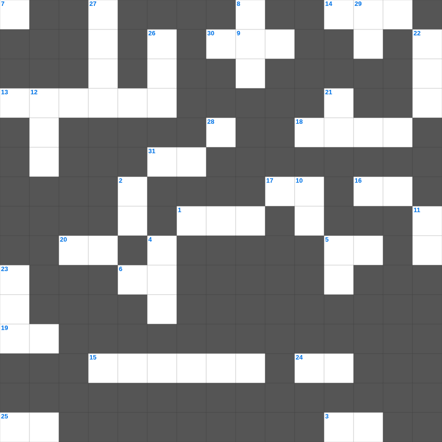

디모데전서 마스터 100
📌 서비스 정의
십자가로세로는 교회 주보와 주일학교에서 사용할 수 있는 성경 기반 가로세로 퍼즐 서비스입니다. 성경 인물, 사건, 핵심 구절을 바탕으로 제작되었습니다. 온라인 풀이 및 인쇄 기능을 제공합니다.
📖 디모데전서란?
디모데전서는 바울이 젊은 목회자 디모데에게 교회의 질서와 지도자의 자격, 건전한 가르침을 지키는 법에 대해 가르치는 목회 서신입니다.
📚 디모데전서의 주요 사건·주제
거짓 교훈에 대한 경고 · 기도와 예배에 대한 가르침 · 감독과 집사의 자격 · 디모데를 향한 목회적 권면 · 참된 경건과 부에 대한 가르침
무료로 즐기는 디모데전서 디모데전서 성경 퀴즈 문제! 35개의 힌트로 구성된 가로세로 낱말 퍼즐입니다. PC와 모바일 모두 지원되며, 정답을 바로 확인할 수 있어 혼자서도 쉽게 풀 수 있습니다.

📝 가로 힌트
1. 주인이 그 종들에게 재능대로 금 다섯, 둘, 한 이것을 맡기고 떠났더니
3. 하나님이 사울을 왕으로 세운 것을 이것하셨더라
4. 성전 완공 후 낙성식 때 하늘에서 내려와 제물을 사른 것
5. 드로아 가보의 집에 두고 온 물건
6. 죽은 자를 위하여 살에 이것을 하지 말라
7. 총독 빌라도가 민란이 일어날까 두려워 물을 가져다가 무리 앞에서 이것을 씻으며 이르되
9. 하나님은 무엇을 미워하시며 의복으로 폭력을 가리는 자를 미워하시는가
12. 바울과 함께 갇힌 자이자 마가라고도 하는 바나바의 생질
13. 옛 세상을 용서하지 아니하시고 오직 의를 전파하는 이 사람과 그 일곱 식구를 보존하시고 경건하지 아니한 자들의 세상에 홍수를 내리셨으며
14. 성전 입구에 세운 두 기둥 '야긴과 이것'
15. 안식 후 첫날 일찍이 무덤에 와서 돌이 무덤에서 옮겨진 것을 본 여자
16. 믿음으로 이것은 죽음을 보지 않고 옮겨졌으니
17. 기도를 계속하고 기도에 이것함으로 깨어 있으라
18. 말라기 4장에서 예언된 '엘리야'는 신약의 누구를 가리키나
19. 바울이 디모데에게 엄히 명한 것: 너는 무엇을 전파하라
19. 사람이 떡으로만 사는 것이 아니요 여호와의 입에서 나오는 이것으로 삶
20. 예수께서 부활 후 막달라 마리아에게 처음 보이셨을 때 그녀에게서 일곱 이것을 쫓아내 주셨었음
24. 하나님의 아들 예수 그리스도의 이것의 시작이라
25. 요한이서 1장 4절: 자녀들이 진리 안에서 행하는 것을 보고 얻은 것
30. 그러므로 하나님의 능하신 손 아래에서 겸손하라 때가 되면 너희를 이것하시리라
📝 세로 힌트
2. 헤롯 왕의 박해를 피해 애굽으로 피신했던 아기
4. 가데스 바네아에서 올라가기를 거부한 죄
5. 네가 올 때에 내가 드로아 가보의 집에 둔 이것을 가지고 오고 또 책은 특별히 가죽 종이에 쓴 것을 가져오라
8. 내 머리에는 이슬이, 내 머리털에는 밤이슬이 가득하였다 하는구나
10. 새 계명을 너희에게 주노니 서로 이것하라
11. 성령의 아홉 가지 열매 중 다섯 번째
12. 남유다의 왕권을 찬탈하고 손자들을 죽였던 여왕
21. 길갈에서 행한 의식 '모든 남자가 행함'
22. 종들아... 사람을 기쁘게 하는 자와 같이 이것만 하지 말고 오직 주를 두려워하여 성실한 마음으로 하라
23. 하나님을 사랑하노라 하고 그 형제를 미워하면 이는 이것하는 자니
26. 에베소서를 전달한 신실한 일꾼이자 바울의 사랑을 받는 형제
27. 루스드라에서 나면서부터 걷지 못하게 된 자를 고치자 사람들이 바나바를 제우스, 바울을 이것이라 부름
28. 아담 안에서 모든 사람이 죽은 것 같이 그리스도 안에서 모든 사람이 이것을 얻으리라
29. 구스 사람 세라의 백만 대군을 기도로 이긴 남유다 왕
🧩 이 퍼즐에서 배우는 내용
이 퍼즐은 디모데전서 마스터 100의 핵심 단어와 개념을 자연스럽게 복습할 수 있도록 구성되었습니다. 주일학교 수업이나 개인 성경공부에서 학습 내용을 점검하는 용도로 바로 활용할 수 있습니다.
🧑🏫 교회 교육 자료 활용
이 퍼즐은 주일학교 교재 추천 자료로 활용할 수 있고, 주일학교 주보에 넣기 좋은 분량으로 구성되어 있습니다. 수업용 주일학교 교안에 활동지로 붙이거나, 예배 후 복습용 주일학교 공과교재로 바로 사용할 수 있습니다.
🏷️ 키워드
디모데전서 성경 퀴즈 문제, 디모데전서, 십자가로세로, 성경퀴즈, 말씀퀴즈, 가로세로퍼즐, 주일학교 교재 추천, 주일학교 주보, 주일학교 교안, 주일학교 공과교재